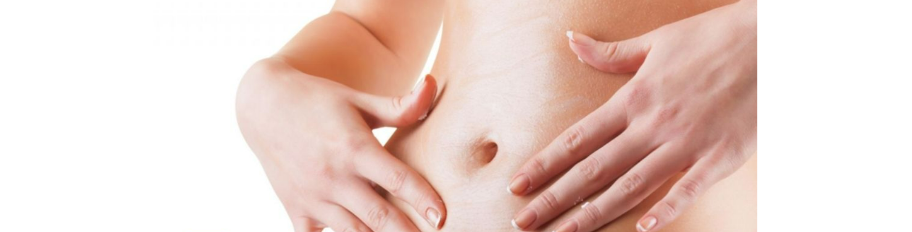

Khâu thẩm mỹ là gì? Cách khâu, chăm sóc vết thương thẩm mỹ
Khâu thẩm mỹ là phương pháp khâu bằng chỉ tự tiêu hoặc không tiêu giúp làm giảm, thậm chí có khả năng loại bỏ hoàn toàn nguy cơ để lại sẹo cho những bệnh nhân có vết thương hở hoặc vết mổ sau phẫu thuật. Vậy thì phương pháp khâu thẩm mỹ là gì và được thực hiện như thế nào?
Khâu thẩm mỹ là gì?
Trong y khoa, khâu vết thương là phương pháp được áp dụng để điều trị cho các bệnh nhân có vết thương hở lớn hay vết mổ sau khi tiến hành phẫu thuật. Bằng phương pháp này, miệng vết thương được đóng sát giúp thúc đẩy quá trình tái tạo và liền da, đồng thời hạn chế khả năng vết thương bị rách, mở rộng hoặc bị nhiễm trùng.
Cùng với sự phát triển của y học, quá trình điều trị các vết thương hở không chỉ dừng lại ở các tiêu chuẩn về an toàn, tiêu chuẩn về chữa trị trong y tế mà việc khâu vết thương còn được xem xét trên phương diện thẩm mỹ. Điều này có nghĩa là việc khâu vết thương cần được thực hiện cẩn trọng, đồng thời, các phương pháp giúp vết thương lành nhanh, ít để lại sẹo, không gây ra sẹo xấu, sẹo lồi sẽ được ưu tiên ứng dụng.
Phương pháp khâu thẩm mỹ được thực hiện bằng các mũi khâu trong da. Bác sĩ sẽ tiến hành các mũi khâu liên tục ở lớp bì, ngay dưới lớp biểu bì da. Với phương pháp này, các vết chỉ khâu không lộ rõ, thường chỉ có một đầu chỉ thắt nút to được neo ở đầu vết mổ. Do đó, vết thương thường lành nhanh và hầu như không để lại sẹo trên bề mặt da.
Tuy nhiên, chúng ta không thể áp dụng khâu thẩm mỹ trong mọi trường hợp. Phương pháp này chỉ thích hợp với những vết mổ, vết thương sạch ở các vùng không bị căng, co kéo nhiều như vùng bụng, vùng mặt hay vùng bẹn…
Khâu thẩm mỹ cho vết thương, vết phẫu thuật khác
Khâu vết thương thường được chỉ định cho các vết thương mở dài hơn 1.5 cm hoặc rộng 0.5 cm. Nếu vết thương sạch, không có dấu hiệu nhiễm trùng hay bất thường khác, vị trí da không dễ bị căng, ít co kéo thì có thể khâu thẩm mỹ để tránh sẹo xấu. Ngược lại, khi có dấu hiệu bất thường thì nên ưu tiên phương án điều trị phù hợp để đảm bảo an toàn, tránh nhiễm trùng, giúp vết thương, vết mổ mau lành.
Các loại chỉ khâu dùng trong khâu thẩm mỹ
- Chỉ TRUSTIGUT® (Chỉ Catgut): Từ Catgut xuất phát từ chữ Kitgut – là một loại nhạc cụ có dây (còn gọi là đàn Kitte), nếu dịch sát nghĩa thì từ catgut thường bị nhầm là chỉ ruột mèo. Thực tế, chỉ khâu y tế Catgut phổ biến trên thị trường chủ yếu được làm từ collagen thanh mạc ruột bò là tốt nhất vì có sức căng vượt trội, sợi mềm mịn, dễ uốn hơn hẳn các loại chỉ làm từ ruột hay niêm mạc động vật khác như cừu hoặc dê. Chỉ tan nhanh Plain Catgut (có màu vàng nhạt) có khả năng tự tiêu trong vòng 1 tuần. Nếu sợi chỉ được phủ thêm muối chrome (chromium salt), còn gọi là chỉ tan chậm Chromic Catgut (có màu nâu đậm) thì thời gian tự tiêu được kéo dài từ 2-3 tuần. Khi sử dụng chỉ Catgut, bệnh nhân không cần cắt chỉ vết mổ và rất ít trường hợp để lại sẹo ở vị trí khâu. Ngày nay, chỉ TRUSTIGUT® – Catgut dần được thay thế bằng các loại chỉ tự tiêu (absorbable sutures) tổng hợp từ polymer có khả năng tương thích sinh học cao cùng với thời gian tan ổn định, thích ứng với mọi cơ địa như chỉ TRUSTISORB® – Polyglecaprone 25 hoặc CARESORB® – Polyglactin 910
- Chỉ CARESYN® (Chỉ Polyglycolic Acid): là chỉ đa sợi bện tổng hợp, giữ vết khâu tốt trong vòng 30 ngày, tự tiêu hoàn toàn trong 60-90 ngày kể từ thời điểm khâu vết thương. Vì chỉ không chứa collagen và kháng nguyên nên thường ít gây ra các phản ứng trong tổ chức.
- Chỉ CARESORB® (Chỉ Polyglactin 910 Suture tương đương chỉ VICRYL): là phiên bản mới hơn và có thể thay thế hoàn toàn chỉ Polyglycolic Acid (PGA) truyền thống được phát minh lần đầu bởi công ty Davis & Geck vào thập niên 1970 với tên thương mại là chỉ Dexon. Chỉ Polyglactin 910 (gồm 90% Polyglycolic Acid và 10% Lactide Acid) có tính năng kỹ thuật và chỉ định sử dụng tương tự như chỉ Dexon hoặc Safil với 100% Polyglycolic Acid. Chỉ CARESORB® – Polyglactin 910 là chỉ đa sợi bện tổng hợp, giữ vết khâu tốt trong vòng 30 ngày, tự tiêu hoàn toàn trong 56-70 ngày kể từ thời điểm khâu vết thương. Chỉ Polyglactin 910 có thời gian tan hoàn toàn nhanh và tối ưu hơn so với chỉ Polyglycolic Acid, đồng thời có lớp phủ bề mặt sợi chỉ ít trơn nên dễ thao tác hơn.
Ngày nay, các bác sĩ phẫu thuật thẩm mỹ thường có xu hướng sử dụng chỉ tự tiêu tổng hợp đơn sợi thay cho chỉ đa sợi do chỉ có độ an toàn và tương thích sinh học cao hơn đáng kể, không gây kích ứng hoặc ở mức tối thiểu như chỉ PROTISORB® – Polydioxanone (PDO), Polyglecaprone-Polycaprolactone (PGC-PCL)… Các loại chỉ đơn sợi này còn được dùng để cấy chỉ thẩm mỹ giúp tăng sinh collagen, nâng cơ, nâng mũi, căng da mặt….